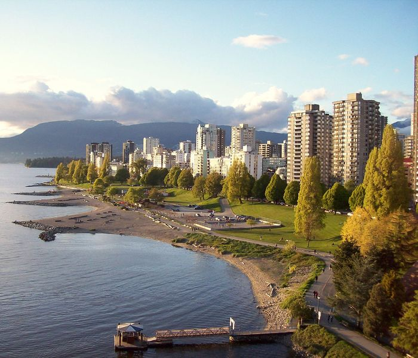

Greater Vancouver Activities is all about discovering the greatest and most fun aspects of this city, for both visitors and long time residents alike.
Included are must see sights, outdoor activities, food, attractions, and tours.
As a community driven site, input and suggestions can be sent to the Feedback page or emailed to roberttdesjardins@gmail.com.
